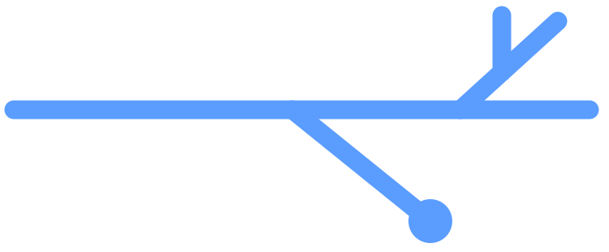

Pull-request review that shows its evidence.
Diffowl runs a typed, auditable first pass over every eligible pull request and hands the decision back to your team.
uses: D4NZ-jpg/diffowl@main
 Open source on GitHub
Open source on GitHub
Diffowl runs a typed, auditable first pass over every eligible pull request and hands the decision back to your team.
uses: D4NZ-jpg/diffowl@main
Open source on GitHub


A material finding is a claim with a location, an impact, repository evidence, and an explicit verification state. No evidence, no finding.
Transient provider errors now permanently discard events instead of requeueing them.
Example finding, shown as Diffowl publishes it to a review thread.
Generation, challenge, and verification are separate roles, so confident language never counts as proof by itself.
The CLI runs the engine the Action runs. Reproduce a CI review locally, inspect the full report, and get the same typed outcome.
cleanfindingspartial_coveragetimeoutabstentionconfiguration_failure

A clean result means Diffowl found no material problems in what it was allowed to check. It is not proof the change is correct, and it is not an approval.
What Diffowl does and does not do →